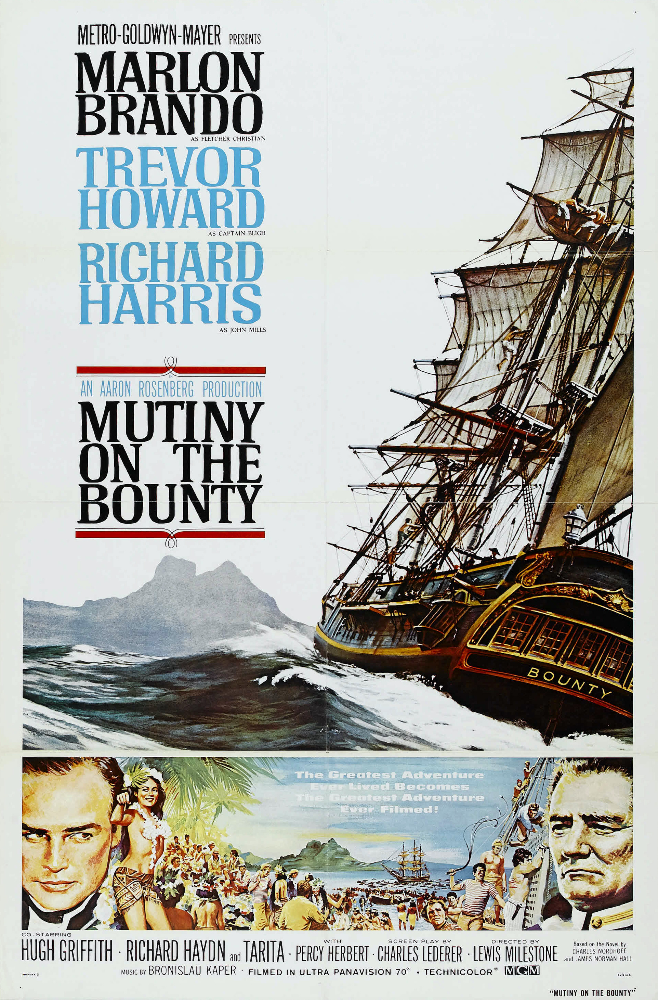

Mutiny on the Bounty
35th Academy Awards
(Oscars 1963)
7 Nominations, 0 Awards
| Nominations | ||
|---|---|---|
| Category | Nominees | Result |
| Best Picture | Aaron Rosenberg | Nominated |
| Cinematography (Color) | Robert L. Surtees | Nominated |
| Film Editing | John McSweeney, Jr. | Nominated |
| Art Direction (Color) | George W. Davis, Henry Grace, Hugh Hunt, and J. McMillan Johnson | Nominated |
| Special Effects | A. Arnold Gillespie and Milo Lory | Nominated |
| Music (Music Score--substantially original) | Bronislau Kaper | Nominated |
| Music (Song) "Love Song From Mutiny On The Bounty (Follow Me)" |
Bronislau Kaper and Paul Francis Webster | Nominated |